Content Outline
- How to collect architectural drivers for effective data product design.
- How architecture views represent current state and target structure.
- How requirements translate into concrete design options and decisions.
- How to evaluate tradeoffs across simplicity, performance, security, and maintainability.
- Which architecture patterns support integration, exposure, and data consumption.
- How to converge on solutions consistent with principles and constraints.
S01 - Architectural Drivers
Organizing architecture design sessions.
Using and collecting architectural drivers.
S02 - Governance Model
Turning the database inside out.
will come much closer to the code and technical details. will step into the Messflix software architect’s shoes to design technical architecture for the data products.
In the related material, the organization learned the principles, such as what data product boundaries should look like, how to apply product thinking, how governance should be set up, and what an underlying platform is. It is possible to consider the case of now looking at diagrams of.
S03 - Architectural Drivers
Choose the proper notation to capture architecture.
Make design decisions based on architectural drivers.
S04 - Architecture and Design
Design the technical architecture of a data product.
starts by explaining what software architecture is and how to capture its current state in the organization.
S05 - Planning and Interior
Whenever someone is planning a major renovation of their home interior, they usually hire an interior designer. But before the designer can start work, they have to capture a current floor plan.
This planning process is similar to the work done by software architects. If the organization does not understand the systems that are already in place and how they are connected, the organization cannot plan any changes.
shows the the kind of architectural information It is necessary to gather before jumping into the design of data products. If the systems are already well documented, good for the organization!
S06 - Self-Serve Platform Design
starts by clarifying what teams mean by software architecture. In this context, architecture is the structure of the software and the process of designing it.
By architecture as a structure, teams mean the building blocks of the system; the relations and interfaces between them; the patterns applied; the technology stack for the building blocks, platform, or infrastructure used by these components; and finally cross-cutting concerns like security and.
By architecture as a process, teams mean an act of translating architectural drivers into the architecture design and architectural decisions that shape the structure.
What do teams not consider architecture? Details of the code, or how the particular line of code was written.
the focus is on both sides: architecture as a structure of related building blocks, and architecture as a process of designing and making conscious decisions.
S07 - Architecture Views
One great author who strongly influences the understanding of software architecture is Simon Brown. In C4 Model for Visualising Software Architecture (Leanpub, 2022), he shares a brief yet powerful notation that can be used to capture architecture diagrams: the C4 model.
describes this notation here for two reasons. First, to explain to the organization ways of designing data products in the Messflix example.
S08 - Containers and Components
- Context It shows a software system as a black box with people and other systems interacting with it.
- Container It is similar to a context diagram, but reveals the containers that form the software system. By containers, Brown usually means applications or data stores.
- Component It zooms into one of the containers and shows its building blocks, the components. It is possible to treat components like modules in the codebase.
- Code It zooms into one of the components. It is a UML class diagram that describes the internals of a component.
In addition, Brown describes a few additional diagrams like deployment, infrastructure, and system landscape.
Teams usually use levels 1, 2, and 3, and additionally system landscape, deployment, and infrastructure. Teams usually skip level 4, because a preferred approach is that code speaks for itself.
Notation in levels 1–3 is simple: human icons, rectangles, and arrows. Each diagram has only a few elements: system, container, component, person, and their relations (arrows).
The process begins at the context level (C1) in.
Now zooms into the container level (C2) in.
Finally, teams zoom into the component level (C3) in.
With such diagrams, It is possible to understand the static structure of the Messflix architecture, but architecting is a process of decision-making, and to fully understand the design, it is necessary to understand the architectural drivers (functional requirements, quality attributes, constraints, and principles) that lead teams to.
It is already established that the structure of current solutions. But before teams jump into the design of a data product, teams need first to understand the architectural drivers that will guide the design.
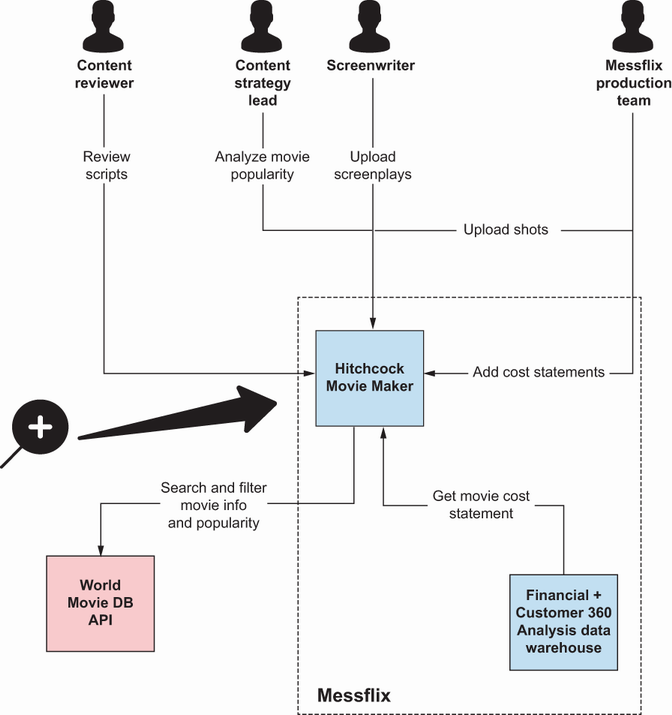
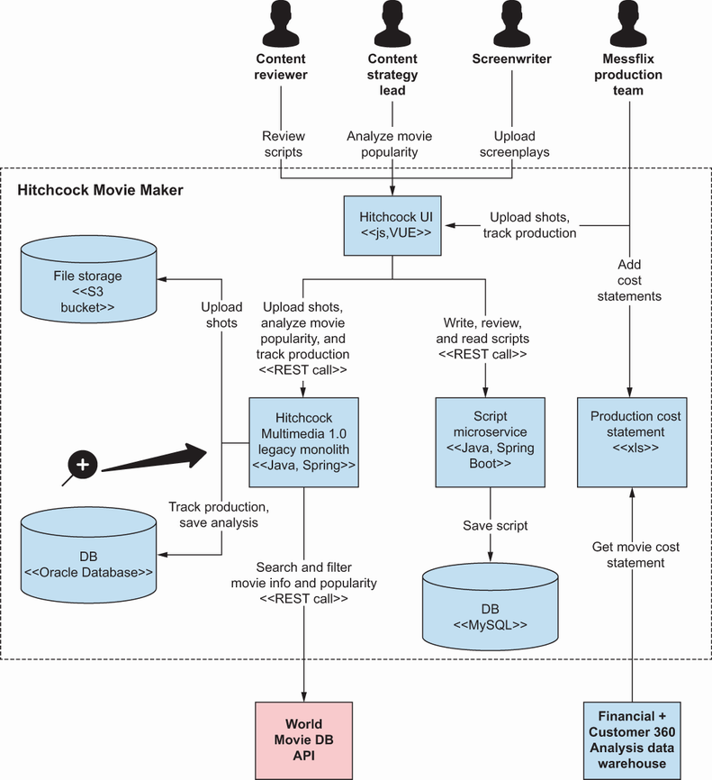
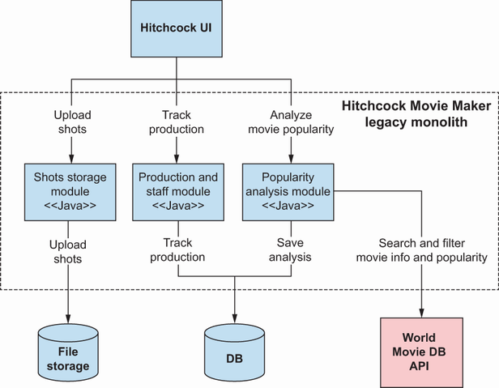
S09 - Architectural Drivers
Consider the case of an army commander. It is the day before a battle.
As a software architect, much like a military commander, the organization relies on the contextual information of the specific “battlefield” before It is possible to make the plans. Architecture design is the battle, and architectural drivers are the information It is necessary to choose the best architecture.
describes about architectural drivers. These drivers will be an input needed for the design.
S10 - Architectural Drivers
It is possible to divide architectural drivers into four categories: functional requirements, quality attributes (also called nonfunctional requirements), constraints, and principles.
For the system of records, functional requirements are usually gathered in a backlog in the form of features or user stories. In the context of a data product, functional requirements are the information needs of (potential) data consumers together with the value they derive.
S11 - Governance Model
Quality attributes, sometimes called nonfunctional requirements, are more technical. It is possible to think of them as qualities or technical requirements of the system.
Most quality attributes are limited to just a system/product level. Still, quality attributes are so important from the company strategy perspective that they are established at the level of the governance team or top management.
S12 - Governance Model
Constraints are usually independent of teams and are imposed by a governance body or top management. It is possible to divide constraints into the following categories.
Time and budget constraints are self-explanatory, and it is generally accepted that everybody is familiar with them. An example of such a constraint is a deadline for delivering solutions.
S13 - Business Case and Drivers
If the organization has strong technical leadership or some kind of architecture or data governing body, an explicit list of principles should drive the design decision. It is possible to see examples of such principles in.
In, teams described what teams mean by architectural drivers with simple examples. focuses on capturing architectural drivers for the data products, using the example of a Cost Statement data product, which is a merge of cost statements from preproduction, production, and.
S14 - Data Product Canvas
examines Consider the case of the software architect responsible for designing a newly established data product. The data product owner already knows the data scope of the product and has already interviewed all possible users, and so knows their needs.
Such requirements can be gathered in many forms, but examines assume that the data product owner gathered these in the form of plain text combined with a simple picture and data product canvas. In, It is possible to see the Cost Statement data product with.
In, It is possible to see the requirements and data product canvas (described in ) that the organization received from the data product owner.
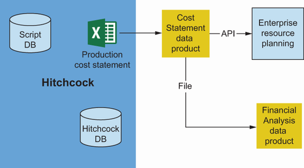
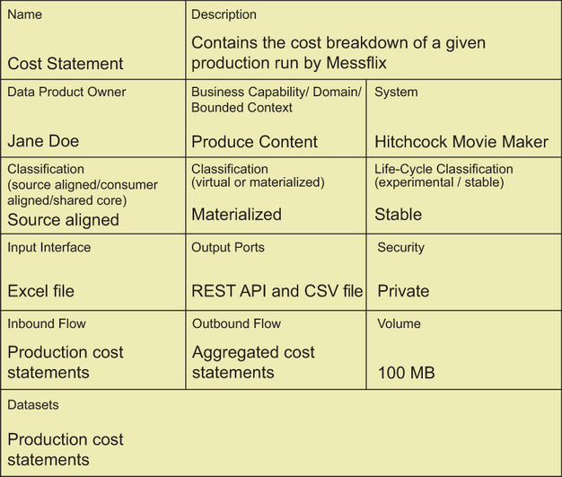
S15 - Data Product Team Structure
The Cost Statement data product is derived from cost statement spreadsheets that are stored by the Production team as a part of the Hitchcock Movie Maker on the online drive.
Data will be exposed to two consumers: ERP for accounting purposes through the REST API, and the Financial Analysis data product for yearly and monthly financial reports prepared for the CEO.
ERP will consume new cost statements daily, and it will require REST API for integration because of its limitations. The cost statement will contain private information like the payrolls of the cast.
The Financial Analysis data product is consuming monthly aggregations. A CSV file port is the preferred port.
As a good data product owner or software architect, It is recommended to know that such a description is not enough to understand what kind of quality attributes should be the priority during the design. It is recommended to reread the description, talk to the stakeholders or consumers.
It can already tell what kind of quality attributes teams don’t have to emphasize. They are scalability, performance, and availability.
From the description, It is possible to observe that privacy is important because of the private data.
will have to review the details and apply critical thinking to extract more. Cost statements will be used in financial reports, which the CEO will use to make decisions worth millions of dollars; the data product owner, together with the organization, decide that auditability.
So teams want to propose two quality attributes: privacy and auditability. As an architect, the organization also looks for quality attributes in system-of-record documentation as an inspiration.
S16 - Data Product Ownership
When the organization, with the data product owner, establish a list of possible quality attributes, try to limit them to only those that are crucial. Keep the list short and simple.
When teams have a list of important quality attributes, prepare a straw man’s proposal of metrics or measures of success for these nonfunctional requirements.
DEFINITION Making a straw man’s proposal is a technique to propose a solution that is obviously wrong. Because it is wrong, it will usually trigger the recipient to provide a better proposal.
As It is possible to see in, the values in the “Straw man’s proposal” column will trigger discussions with the data product Owner and Business Stakeholders. The result of these discussions should be collected in the form of two measures of success: worst possible but.
For auditability, the straw man’s proposal that the organization show to stakeholders is to keep the cost statements for one week. Because the organization plan to use cost statements for financial reports, this option is obviously wrong; usually this report is created with data from at.
This process is similar for privacy. Saying that everyone at Messflix has access to personal data is obviously a wrong statement.
To summarize, here are the steps that the organization, as an architect or data product owner should follow.
Analyze functional requirements.
Extract nonfunctional requirements from the requirements and discussions with stakeholders.
Limit the list to only crucial nonfunctional requirements.
Prepare a straw man’s proposal with measures of success and review it with possible consumers and stakeholders.
S17 - Governance Model
Constraints, principles, and quality attributes can be defined on the level of the product, as teams showed, but they also can be defined on the level of the whole organization. This is usually the case when the organization has a governance body and.
At Messflix, teams have a case of strong technical leadership; reviews architectural drivers those leaders defined at the level of the organization.
S18 - Java and Python
- Java and Python as the general-purpose programming languages The company has many Java and Python developers with dedicated communities of practice. Using these two languages facilitates transferring knowledge, sharing experience, and moving employees between projects/products.
- Single cloud provider Moving to a new provider requires a lot of learning and investments, and the company would like to avoid that if possible.
S19 - Self-Serve Platform Design
- Platform over custom solutions Whenever possible, prefer to use the data platform instead of writing custom solutions.
- Openness to open source When choosing a new tool, library, or framework, always consider open source alternatives.
Everyone is an architect and can make architecture decisions (within constraints), but every architecture decision has to be discussed with those affected by the decision and with experts in the subject. Teams want to empower teams to make their own decisions.
S20 - User and Satisfaction
- Usability means user satisfaction is the king Messflix relies strongly on user satisfaction, so whenever the organization make technical decisions, analyze whether that decision will improve or worsen the user experience.
- Findability of data All data within the organization has to be findable in a data catalog.
S21 - Architectural Drivers
9.3 Designing the future architecture of a data product and related systems.
teams showed the organization the process of capturing current architecture and collecting architectural drivers, through the example of the Cost Statement data product. will follow up on that example to show the process of designing the.
S22 - Architectural Drivers
Existing monolithic and microservice architecture as a source of data for a data product.
In each example, will analyze architectural drivers, possible solutions, and tradeoffs related to these solutions. While reading, don’t focus too much on the specific technologies used (e.g., MongoDB); they are provided just as examples.
S23 - Data Product Team Structure
Teams strongly believe that design should be a collaborative and collective effort done by the whole or by most of the development team. This helps avoid the pitfall of the ivory tower architect.
definition An ivory tower architect is a software architect who is isolated from others, mainly the development team, because of organizational structure, company culture, or personal approach.
When everyone is involved in the design of a data product, the team will feel connected to it; it will be their child. This is why It is recommended to invite the whole team to the design session.
S24 - Architectural Drivers
Architectural drivers presentation and Q&A session.
Brainstorming possible design options in pairs, where every pair creates their proposal.
Cross-review between teams to determine the pros, cons, and fixes of solutions.
Collective decision to decide which design is best.
definition A pro-con-fix exercise provides a way to compare options without overfocusing on the negatives. In this extension of a pro-con exercise, the organization not only list the pros and cons, but also try to identify a mitigation for each con.
Now the organization knows the process, but teams are still missing some tangible examples. returns to the Cost Statement data product example.
S25 - Data Product Interfaces
summarizes what the organization’ve learned about the Cost Statement data product.
Currently, it is stored as a spreadsheet in the virtual drive and manually uploaded to the data warehouse.
In the future, teams want to integrate with the Financial Analysis data product (REST API) and ERP (file-based CSV port).
Both ports will be consumed not more often than daily. Teams don’t care much about the scalability, availability, or performance of the solution.
It is necessary to base the design on two nonfunctional requirements: auditability (it is necessary to persist all statements for at least the year) and security/privacy (only the production team can access personal data).
Teams are constrained to Python and Java solutions.
It is advisable to use the platform whenever possible.
The team is guided by these points and comes up with two possible solutions. Each solution goes through cross-review, and as a result, the team comes up with pros, cons, and possible mitigations/fixes for the cons.
S26 - Metadata Management
In this solution, teams are taking advantage of a platform. Teams are using an Airflow workflow written in Python to periodically read spreadsheet files prepared by the Production team.
The workflow stores the raw files in the internal repository. It guarantees the auditability of the data; It is possible to re-create financial aggregations whenever needed.
definition MongoDB is a document database, classified as a NoSQL database program.
It is possible to observe in what other dev team members are thinking about the design. The main quality attributes have been auditability and privacy, which are secured by this design.
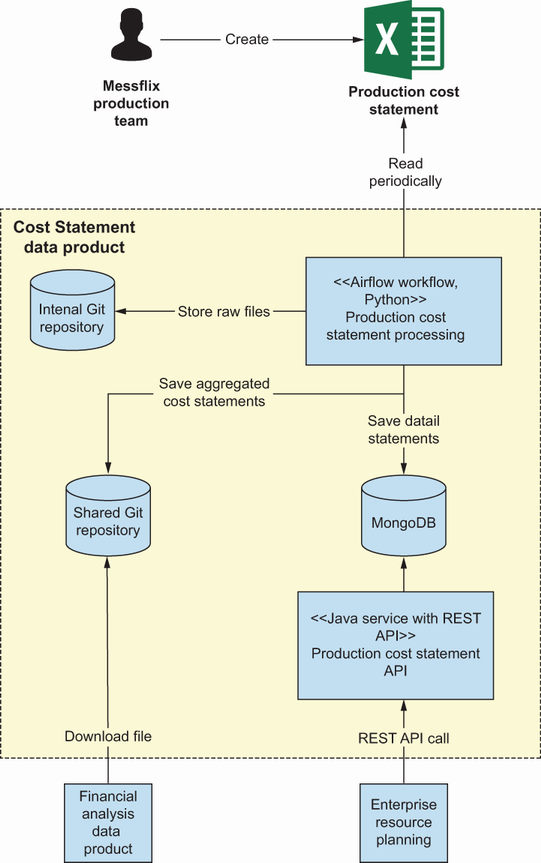
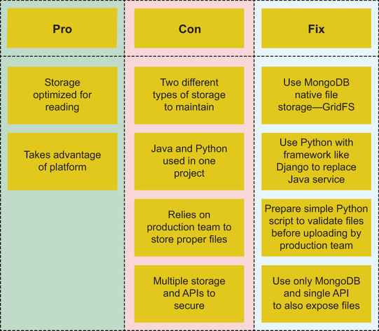
S27 - Self-Serve Platform Design
- Platform over custom solutions This material uses Airflow and storage templates provided by the platform team.
- Openness to open source This material uses MongoDB.
S28 - Java and Python
- Java and Python as the general-purpose programming languages Only Java and Python are used.
- Single cloud provider The whole infrastructure is set up on the favorite cloud provider.
S29 - Data Product Interfaces
- Usability User satisfaction is the king. This is not relevant here, because this system is not exposed to the end user.
- Findability of data Teams achieve this with metadata ports exposed from the data product and connected to a DataHub.
reviews solution 2.
S30 - Self-Serve Platform Design
In this solution, the things that stand out are the different storage engine—PostgreSQL (an open source, relational database management system)—and the single Java service responsible for processing and data exposure.
will not deeply analyze every part of the following design and pro-con-fix exercise; teams just want to explain the way of thinking about the design process.
As teams look at the pros and cons, It is possible to observe one crucial con: “Does not take advantage of the platform.” This is an important con because it breaks the organization rule: “Platform over custom solutions.” In this option, teams do not take advantage.
After a long and inclusive discussion, the team decides to prepare yet another design, mainly based on design option 1 (teams will skip over the thought process since it’s beyond the scope of ). It is possible to see the output in.
Teams decide to use a single database and a single programming language and take advantage of the Airflow cluster platform.
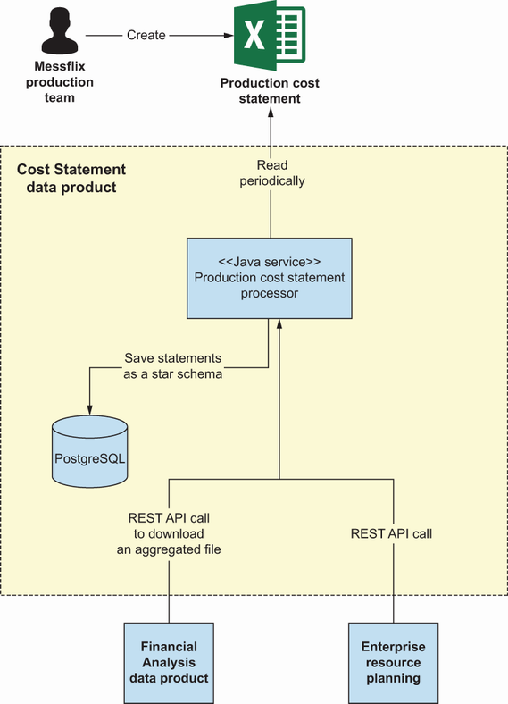
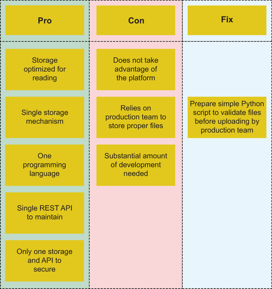
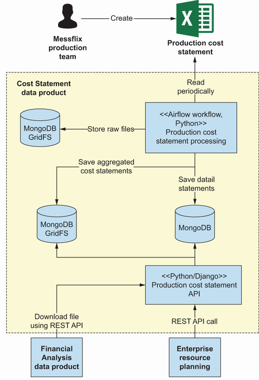
S31 - Architectural Drivers
After the first example, the organization already know the drill. So with the second example, will not repeat ourselves, and will go straight into the summary of the current state and architectural drivers to focus more on the design options.
will again focus on Hitchcock Movie Maker, but this time on the legacy monolith and script microservice. It is possible to remind yourself of its current architecture in.
In, teams visualize two data products for which teams want to design the architecture: the Scripts data product, responsible for aggregating all scripts with their life cycle; and the Cast data product, which focuses on the details of the cast, their preferences, agreements.
starts with the Cast data product.
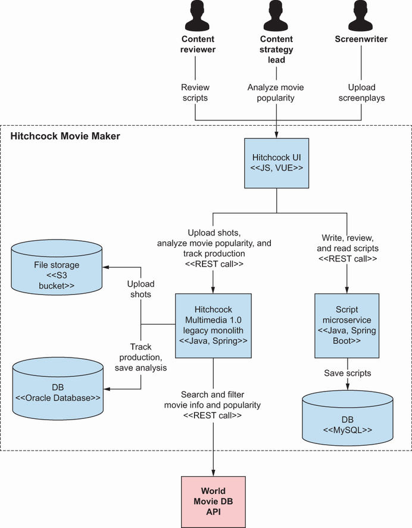
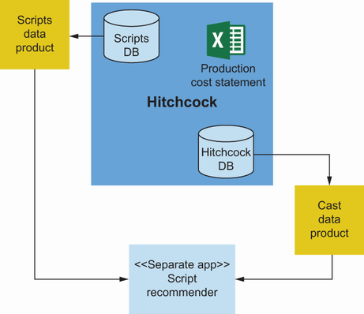
S32 - Data Product Interfaces
Here’s a summary of architectural drivers for the Cast data product.
The script recommender will consume the data product through a REST API.
Data analysts want to consume it using SQL statements to help in salary negotiations.
S33 - Security and Privacy
- Privacy Only the production team and analyst can have access to cast personal data.
- Security The payrolls of a cast include sensitive data. A data breach would lead teams to million-dollar lawsuits from movie stars.
- Compliance Teams are keeping sensitive personal information. This is why GDPR and other privacy regulations apply here.
The script recommender and other potential consumers are not real-time applications. They will be consuming data no more than once a day.
Data analysts will perform their analysis a few times a year.
In this Cast data product example, teams deal with a prevalent problem: how to expose data from monolithic, usually legacy, applications. Before teams jump into the solution, teams want to explain an interesting pattern called turning the database inside out.
S34 - Database and Pattern
Turning the database inside out is a pattern introduced by Martin Kleppmann ( http://mng.bz/z4WB ). In this pattern, Kleppmann combines four ideas.
A database replication mechanism, whereby databases are replicated using asynchronous events transferred between the leader and a follower.
S35 - Data Product Team Structure
All of these are derived data, exactly like a data product. His premise is to create a magically self-updating cache.
So he takes the replication mechanism and applies it outside a database to create something similar to a secondary index or cache or materialized view.
Why are teams mentioning this? It is because the team chooses to use this pattern in design option 1, illustrated in.
Kleppmann’s pattern is great for building data products in general, but remember that If the organization is exposing the schema of the database in events, it is not much different from the integration of two systems via the database, but done asynchronously. It is good.
But examines jump back to architectural drivers of the Cast data product. The team also takes into consideration quality attributes.
DEFINITION The enforcer pattern, or trait, is a category or trait of a bounded context. It ensures that other contexts carry out specific operations.
Teams also care about data analyst needs. It is possible to use Trino to have SQL access to the Cast database.
DEFINITION Trino ( https://trino.io/ ) is a distributed SQL query engine for Big Data. It allows the organization to query multiple data sources such as SQL databases, MongoDB, Kafka, and S3.
Another option designed by the team can be seen in. This material uses an Airflow workflow to extract data from the monolith database, transform it, and move it into the Cast Team data product database.
To learn something new, teams won’t repeat the pro-con-fix analysis, and propose the tradeoff analysis instead.
considers what teams are exchanging in these two designs. A simple example of a tradeoff in the case is an exchange of loose coupling (event contract in option 1) for rapid development and platform reuse (Airflow workflow in option 2).
Teams already resolved one of the data products that has its source in the Hitchcock Movie Maker system, so now reviews another data product with the same source.
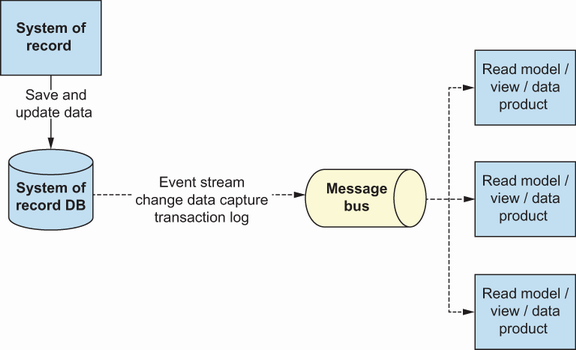
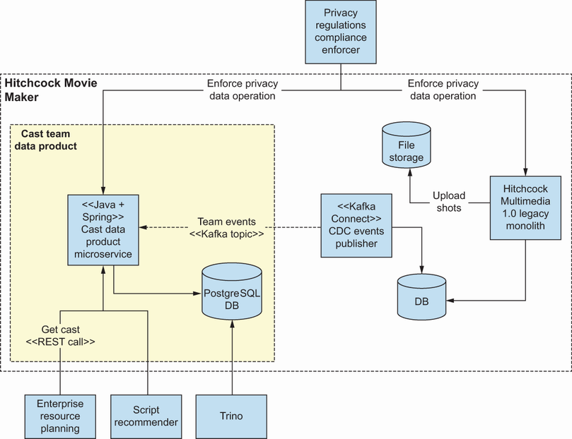
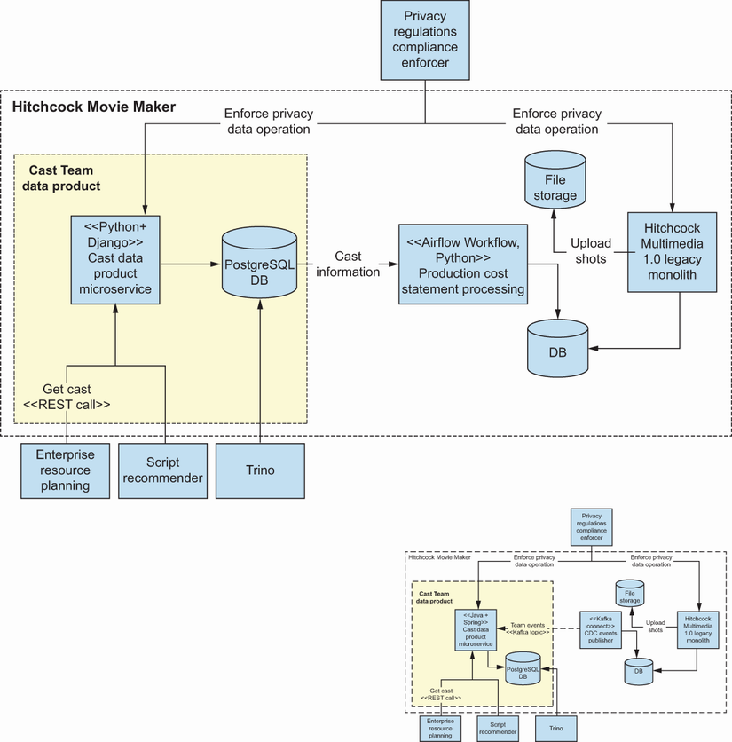
S36 - Data Product Interfaces
Here’s a summary of architectural drivers for the Scripts data product.
The script recommender will consume Scripts data product through a REST API. The script Recommender does not require any extraordinary transformation of scripts.
S37 - Architectural Drivers
- Security Scripts are essential for Messflix. This is why they should be protected.
The script recommender is not a real-time application. It will consume data no more than once a day.
As It is possible to see, teams don’t have too many architectural drivers, so this is a hint that the solution should follow the KISS principle.
DEFINITION KISS is an acronym for keep it simple, stupid. This design principle has its roots in the US Navy.
After the design session, the team comes up with three possible solutions, depicted in figures 9.16, 9.17, and 9.18.
As the organization’ve probably noticed, with each design, teams are adding complexity. The first design is simply an extension of the current script microservice with a new module that plays the role of a facade through which the script recommender will access the data.
The design is a straightforward but comes with drawbacks. It extends the responsibility of the script microservice, and as a consequence, it changes it into something like a mini modularized monolith.
With options 2 and 3, teams are gradually increasing complexity while decreasing coupling. In option 2, instead of being a module in the script service, the data product is now an independent microservice.
Options 2 and 3 are similar to the CQRS pattern (for more details, see “CQRS” by Martin Fowler, https://martinfowler.com/bliki/CQRS.html ).
In option 2, teams are reusing the same database. To optimize query performance, teams could use a database materialized view.
In option 3, teams have loosely coupled services that follow a “database per service pattern.” In this design, teams trade off simplicity for loose coupling.
After analyzing all options as a team, teams decide to follow the KISS principle in this specific case and choose option 1.
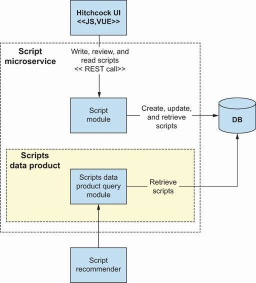
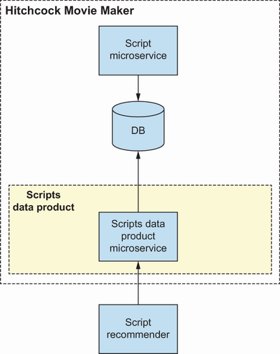
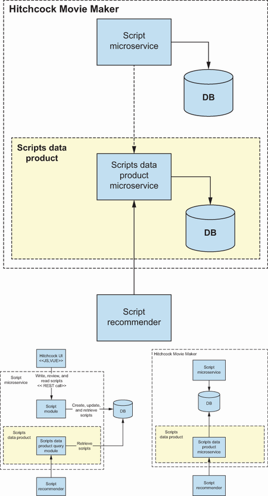
S38 - Self-Serve Platform Design
In the following example, moves away from Hitchcock Movie Maker and jump into a fancier and more advanced part of Messflix: its streaming platform. Teams want to detect fraud based on data coming from the streaming platform.
Teams have three Messflix systems here. Subscriptions 2.0 is a system responsible for handling subscribers; it also keeps their private data.
In this case, the Fraud Analysis data product design will have a powerful influence on the design of the other three source-aligned data products. Just as teams did with the previous example, will jump right to the summary of architectural drivers.
The data product will be consumed by the Customer Support HQ system by using events.
Data scientists want to consume all three sources by using SQL statements.
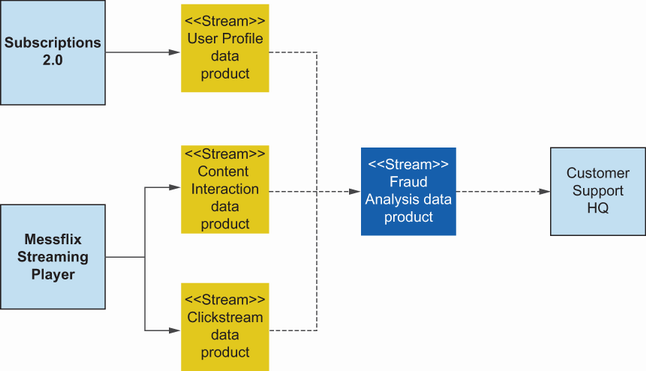
S39 - Different and Solutions
- Response-time Fraud incidents are close to real-time concerns. Teams want to catch criminals red-handed!
- Scalability Teams are dealing with data coming from the streaming player. This kind of data has uneven traffic with multiple peaks that are different in size (weekend, evening, newly released super productions, etc.).
Data scientists will perform their analysis a few times a week.
Looking from a high-level perspective, solutions are not very different and, in fact, not very interesting as an example to learn from. Therefore, will zoom in a bit to see how the use of data products will influence underlying stream solutions and data.
On the container level (C4 model), solutions are not much different. With stream processing, This material uses stream ports from source data products, and the Fraud Prediction container is doing predictions using a stream-processing mechanism.
will not perform a tradeoff analysis for these two options, but the main driver would be response time, and the measure of success for this driver would guide the decision. If a nearer real-time response time is needed than stream processing, or if.
But what is more interesting in this context in terms of a data mesh is to find answers to the following questions.
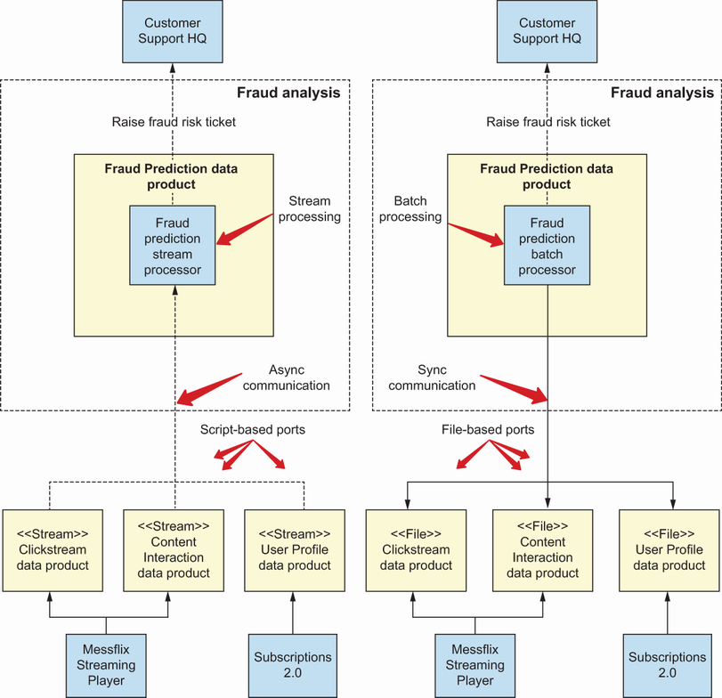
S40 - Products and Take
How should data products take advantage of a data lake solution?
starts with event streams.
S41 - Events and Engine
In the first design, it is necessary to feed a stream-processing engine with three streams of events from three different systems. describes two ways to expose these events.
Extract events from files by using an engine like Airflow.
Use the outbox pattern.
S42 - Pattern and Database
The outbox pattern ( http://mng.bz/06DN ), also known as the transactional outbox pattern, is used whenever teams want to change the state of the database and publish events or messages consistently. This pattern takes advantage of a native database mechanism: the transaction.
The idea is to save a new state in a database table, and at the same time save events in a table that teams call the outbox table. If teams save events and the new state in the transaction, It is possible to be sure that.
Another possible way of exposing events was already shown in, in the Cast data product description. It is the use of the turning database inside-out pattern.
reviews what the other two variants look like.
The first idea is applicable whenever it is necessary to transform files into events. When the organization look at the Clickstream data product in, It is possible to see that it retrieves log files from object storage, extracts and cuts them into smaller events, and publishes them.
Another example is using the outbox pattern. In a nutshell, whenever the Messflix Streaming Platform saves its new state, it is also in the same transaction saving related events into a database table called the outbox table.
OK, teams are able to publish events from the source data products, but what if teams want to process data in a batch that requires files?
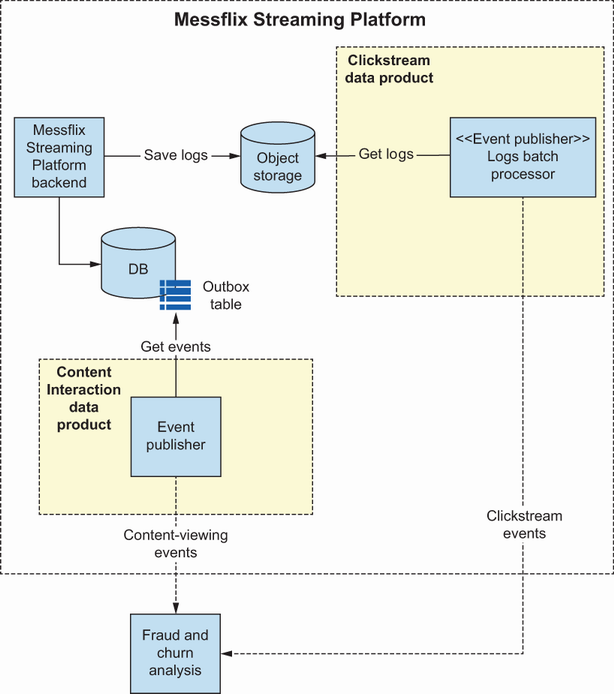
S43 - Data Product Team Structure
With batch processing, It is possible to expose the data in the form of files to make calculations efficient. But what if teams are already using some kind of data lake?
This is the right time to make an important point: a data mesh implementation does not exclude the possibility of using a data lake! In fact, both work together pretty well.
When teams apply the data mesh way of thinking to a data lake, It is evident that that data product teams will own their areas/folders/buckets/namespaces within the same data lake persistence layer where they store data related to their data product. They will also own data.
teams looked at the architecture of a data product from multiple angles. Teams haven’t touched all of the configurations and possible patterns that can be used, but teams’ve given the organization the tools needed to make this kind of decision on the own.
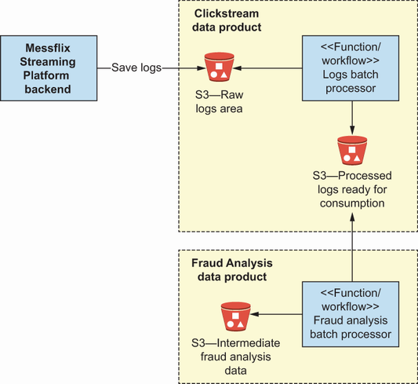
S44 - Architectural Drivers
Architecture is a structure of related building blocks, but it is also a process of designing and making conscious decisions using architectural drivers.
The C4 model is a formal notation used to document architecture. It was designed to be used at every detail level, including the class level, component/ module level, container/service level, and system level.
To design the architecture of a data product, It is necessary to first capture and understand its architectural drivers.
Architectural drivers are functional requirements, quality attributes, constraints, and principles.
Some architectural drivers come from the governance body, some from source or consuming systems, and others from functional requirements and descriptions of the data product.
Designing the data product should be a collaborative and inclusive exercise.
To choose from design options, It is possible to use a pro-con-fix or tradeoff analysis exercise.
Never forget about architectural drivers during the design; It is recommended to go back to them regularly.
To deal with file-based data products, It is possible to take advantage of the platform that should include tools like Airflow.
Turning a database inside out is an easy way to expose data from systems of record.
The CQRS pattern is an example of how read models can be created. The most favorable way is by creating a new service with a separate database synchronized using event-based communication.
It is possible to use the outbox pattern to expose events from the system of record.
A data mesh implementation does not exclude the possibility of using a data lake; these concepts can be complementary.
S45 - Self-Serve Platform Design
8 Comparing self-serve data platforms.
Key takeaways
- How to collect architectural drivers for effective data product design.
- How architecture views represent current state and target structure.
- How requirements translate into concrete design options and decisions.
- How to evaluate tradeoffs across simplicity, performance, security, and maintainability.